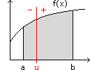
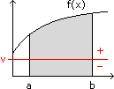
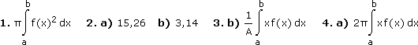
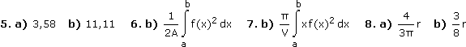

Integralrechnung - Aufgaben 2
Im Folgenden geht es um starre Körper (Blechstücke und Drehkörper), wobei die Schwerkraft normal auf die xy-Ebene wirke.
1.
Bestimme die Integralformel für das Volumen des Körpers, der durch Drehung der Fläche zwischen f(x) und a ≤ x ≤ b um die x-Achse entsteht.
2.
Berechne mit 1) das Volumen, das durch Drehung der folgenden Fläche um die x-Achse entsteht:
a) f: y = lnx, a = 1, b = 5
b) f: y = 2xe–x, a = 0, b = 6
3.

Die Fläche zwischen f(x) und a ≤ x ≤ b habe die Dichte σ. Bestimme a) die Integralformel für das durch die Schwerkraft erzeugte Drehmoment bezüglich der vertikalen Achse bei x = u und b) dasjenige u, bei dem dieses Drehmoment verschwindet (vertikale Schwerelinie). c) Zeige, dass man das Drehmoment in a) auch erhält, wenn man sich die gesamte Masse in der Schwerelinie konzentriert denkt.
4.
a) Bestimme die Integralformel für das Volumen des Körpers, der durch Drehung der Fläche zwischen f(x) und a ≤ x ≤ b um die y-Achse entsteht, und b) zeige, dass man dieses Volumen auch erhält, wenn man die rotierende Fläche mit dem Weg ihres Schwerpunkts multipliziert (Guldin'sche Regel).
5.
Berechne mit 4a) das Volumen, das durch Drehung der folgenden Fläche um die y-Achse entsteht:
a) f: y = 3√1 + x2, a = 0, b = 1
b) f: y) = atanx, a = 0, b = 2
6.

Die Fläche zwischen f(x) und a ≤ x ≤ b habe die Dichte σ. Bestimme a) die Integralformel für das durch die Schwerkraft erzeugte Drehmoment bezüglich der horizontalen Achse bei y = v und b) dasjenige v, bei dem dieses Drehmoment verschwindet (horizontale Schwerelinie).
7.
Der Körper, der durch Drehung der Fläche zwischen f(x) und a ≤ x ≤ b um die x-Achse entsteht, habe die Dichte ρ. Bestimme a) die Integralformel für das durch die Schwerkraft erzeugte Drehmoment bezüglich der vertikalen Achse bei x = u und b) dasjenige u, bei dem dieses Drehmoment verschwindet (Schwerpunkt auf der x-Achse).
8.
Wie weit ist der Schwerpunkt a) eines Halbkreises, b) einer Halbkugel vom Kreis/Kugelmittelpunkt entfernt?
Ergebnisse:

